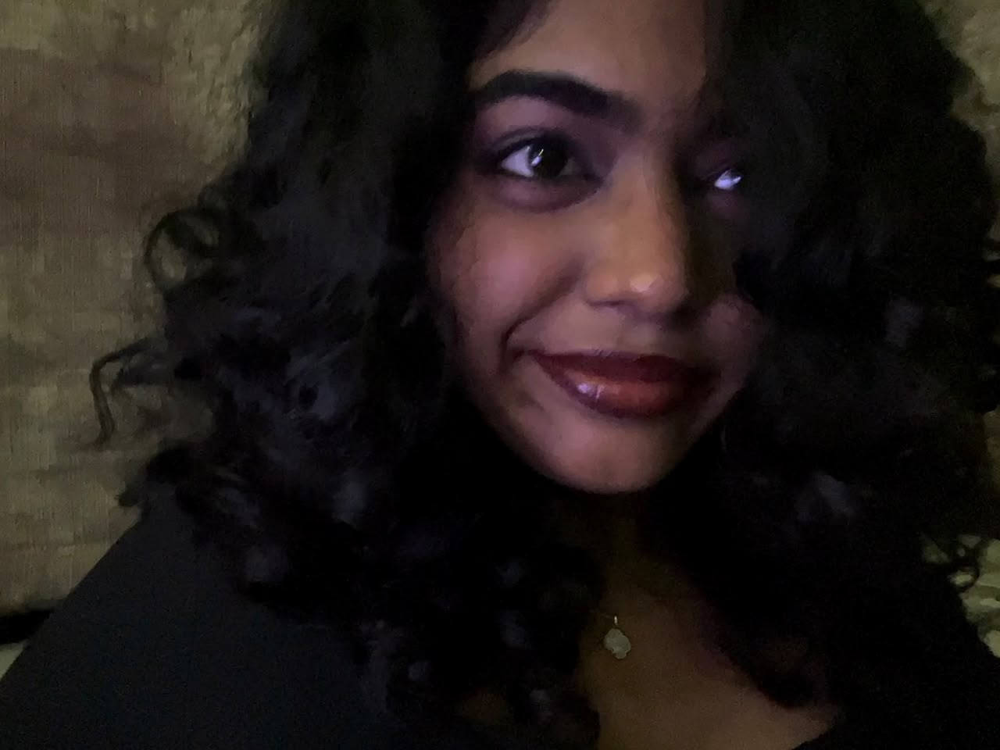

After Dark
A spooky fan-art study of horror-game characters — practising textured fur, glowing eyes and the kind of light that comes from nowhere in particular.
Student · Digital artist
Hey there! I’m Susy, a hardworking student who loves solving problems independently and learning as I go.
When I step away from my desk, you’ll find me drawing, catching up on movies, playing the occasional game of badminton, or out for a long walk. Take a look at what I’ve been working on below.

01
A student who learns by doing.
I’d rather try, get it wrong and try again than wait for the perfect answer — and that habit has taught me most of what I know, from picking up a new brush to figuring out why the light in a portrait feels wrong.
Away from the desk I’m usually drawing — portraits, soft animals, the occasional monster — or catching up on movies. Badminton keeps me quick; long walks keep me thinking.
Your college or university
Currently studying. This portfolio was made for the Unit V practical assignment.
Your school
Where problem-solving became a habit and sketchbooks started filling up.
Your school
First drawings in the margins of every notebook.
Portraits, sleepy animals and the occasional monster. Mostly digital, always in progress.
Catching up on films, then pausing them to study the lighting in a single frame.
The occasional game. Quick feet, quicker decisions and a lot of laughing.
Where most problems quietly solve themselves — and new drawings begin.
02
03
Personal pieces from the last two years — portraits, soft animals and the occasional monster.
A spooky fan-art study of horror-game characters — practising textured fur, glowing eyes and the kind of light that comes from nowhere in particular.
A close-up about a startled glance. Soft skin tones, one glossy lip and a tiny speech bubble doing all of the talking.
A portrait built from just four colours. The swatches stay in the frame so the process stays honest and visible.
Mostly black, almost no colour. A quiet portrait about headphones, lowered eyes and the moment the rest of the world goes mute.
A page of soft things — a kitten, sea otters, blueberries, lilies and a candle. It started as a warm-up and ended up a favourite.

04
A project, a question, a collab — or just a good movie recommendation. My inbox is open.
hello@susy.example